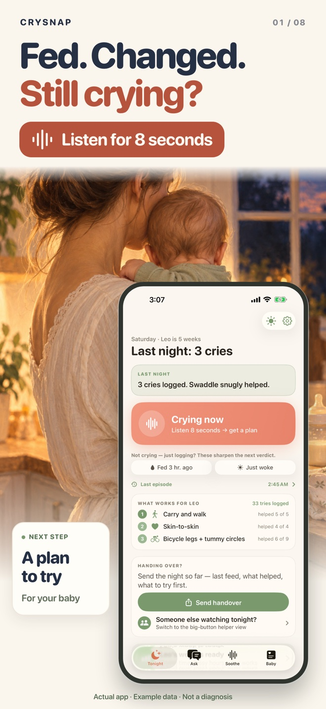
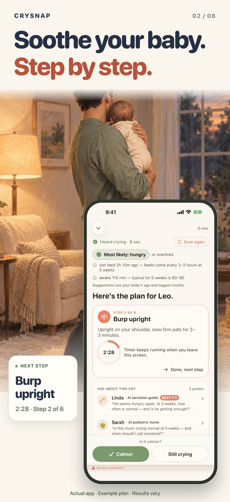
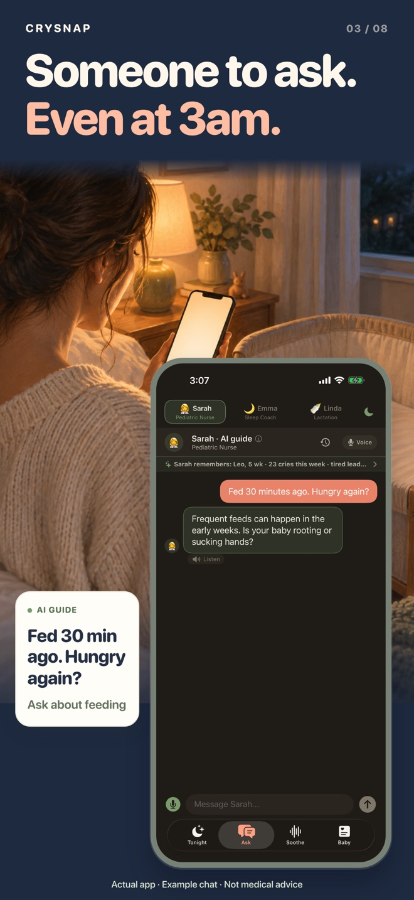

S13 · Первые три английских скриншота
Сцены с родителями сохранены. Телефон меньше, сцена открыта сильнее. По одной короткой смысловой выноске сбоку; настоящий интерфейс целиком и без перекрытий.
Нажми на кадр, чтобы открыть полный размер.


Главный экран с настоящей кнопкой Crying now. Под заголовком Listen for 8 seconds со звуковой волной. Боковая выноска: A plan to try.
Скачать PNG


Реальный план с шагом и таймером. Небольшая выноска Burp upright расположена рядом с телефоном.
Скачать PNG


Настоящий экран чата и демонстрационный диалог. Выноска повторяет конкретный вопрос из чата: Fed 30 min ago. Hungry again?
Скачать PNG
На согласование · 27 сентября. Использованы настоящие снимки из S9. Перед загрузкой сверим их с финальным билдом после правок приложения. В App Store Connect этот вариант не загружен.